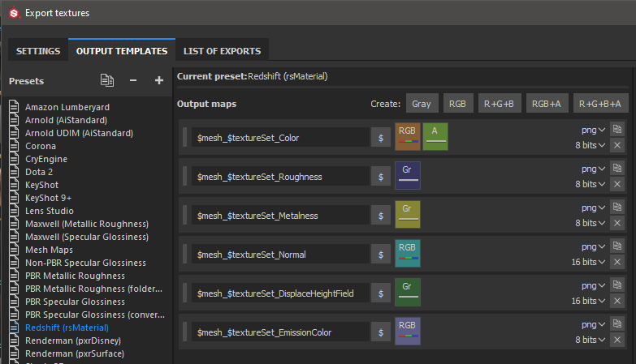

Redshift - Substance Painter
Substance Painter 2020.1 (6.1.0) supports Redshift Output Templates for metallic/roughness (rsMaterial). You can simply export using the Redshift template to produce textures that are compatible with Redshift materials.

Redshift Material Setup
| Substance Painter Export | Redshift Material |
|---|---|
| Color | Diffuse / Color |
| Roughness | Reflection / Roughness (BRDF = GGX) |
| Metalness | Reflection / Metalness (Fresnel Type = Metalness) |
| Normal | Overall / Bump Map / rsBumpMap (Input Map Type = Tangent Space Normal - Height Scale = 1.0) |
| DisplaceHeightField | Displacement Shader / rsDisplacement TexMap (Map Encoding = Height Field) |
| EmissionColor | Overall / Emission (Emission Weight = 1.0) |
Note
Maps that represent data will need to be interpreted correctly. Please see the Color Management page for more information.
Maya / Redshift example